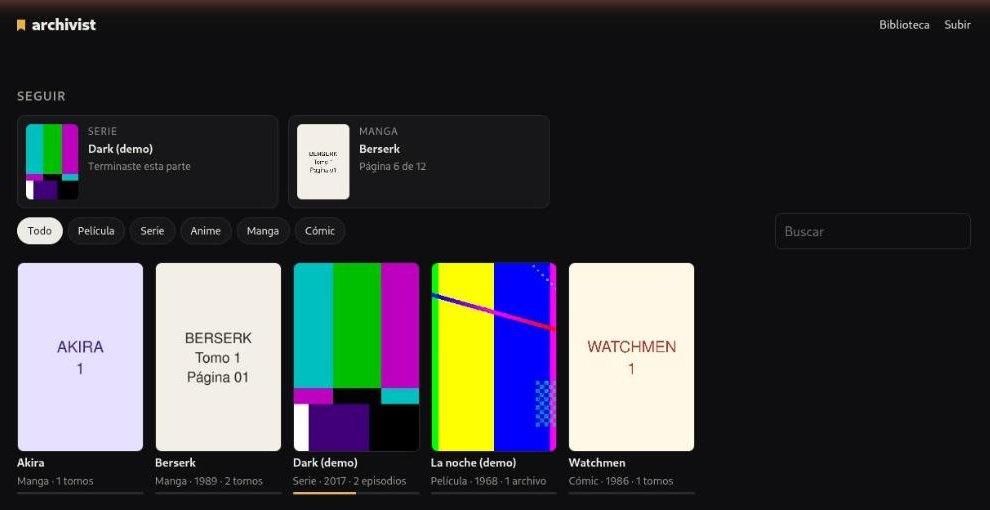
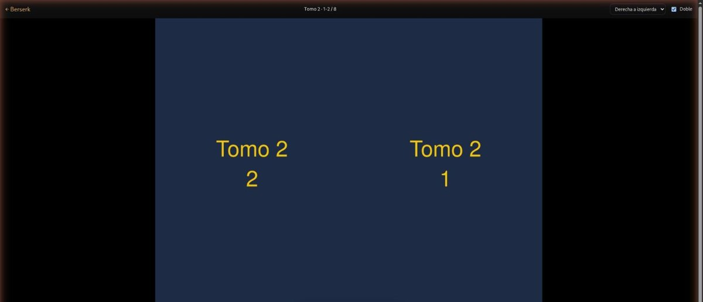

A self-hosted library, reader and player for the manga, comics, films, series and anime on your own disk. One place to continue, the page and the second remembered, and an API for your tools.

The library: what you left halfway first, then everything, read or watched.
CBZ, ZIP, PDF or folders of images. Right to left for manga, left to right for comics, vertical for webtoons, two pages at a time. Keys, taps and swipes.
What the browser plays goes straight out, with seeking. Everything else is converted once with ffmpeg (on the GPU when there is one). Any audio track, subtitles beside the file or inside it, and the next episode.
The volume and the page, the episode and the second. A "continue" shelf for everything, and each person's year: time watched, pages read, what they finished.
An OPDS catalog for Panels, Chunky, KOReader or Mihon. Pages stream one by one, and reading there moves the same "continue".
Works, pages, single frames, progress and events, with a token and an OpenAPI spec. Agents get an MCP server: search, look at a page or a frame, save where you are.
Behind a Cloudflare Tunnel or any reverse proxy: revocable sessions, a limit on wrong tokens, a log for fail2ban or CrowdSec. Video stays home.

docker build -t archivist https://github.com/legiosai/archivist.git docker run -d --name archivist -p 8780:8780 \ -v /path/to/library:/library -v archivist-data:/data \ -e ARCHIVIST_TOKEN="$(openssl rand -hex 24)" \ -e ARCHIVIST_TRUSTED=lan,tailscale archivist
git clone https://github.com/legiosai/archivist cd archivist && npm ci && npm run build ARCHIVIST_LIBRARY=/path/to/library \ ARCHIVIST_TOKEN=… npm start
Node 22 or newer, ffmpeg and poppler. A systemd unit is in deploy/.
library/ video/<work>.mp4 + <work>.yaml a film video/<work>/S01E01.mkv … + work.yaml a series or an anime pages/<work>/vol-01.cbz … + work.yaml a manga or a comic